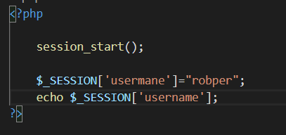

Sessionvariables are used to create sessions which hold a value till a seesion stays
For example untill we do not close our browser the session variable will have the same value
How to create a session variable?
--------------->>>>>>
But now if we remove the assignment statement and refresh the page the session variable will still hold the value
 ------------------------->>>>>>>>
------------------------->>>>>>>>
Note : We can use session variable in any of the pages of our web site but each page should have session_start() at the begening of each page.
Cookies are used to store information(cust_id,password) and it can be used if a user comes after sometime closing the browser it will work
How to make cookie variable?

To unset the cookie